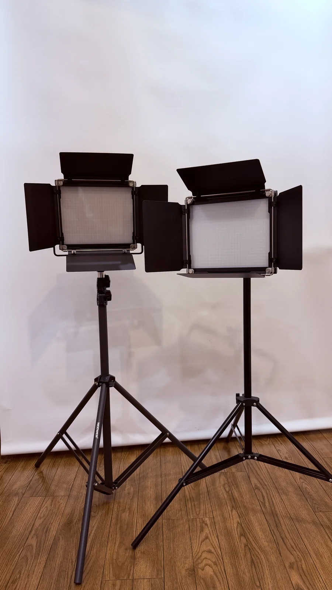
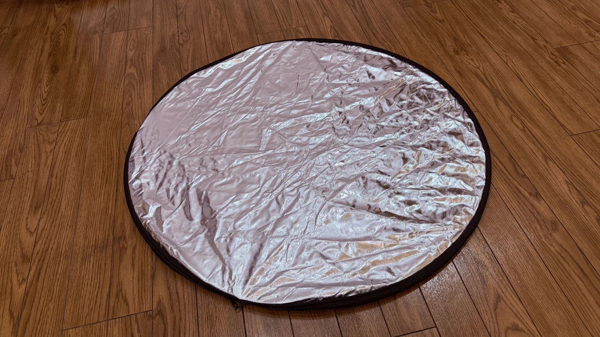
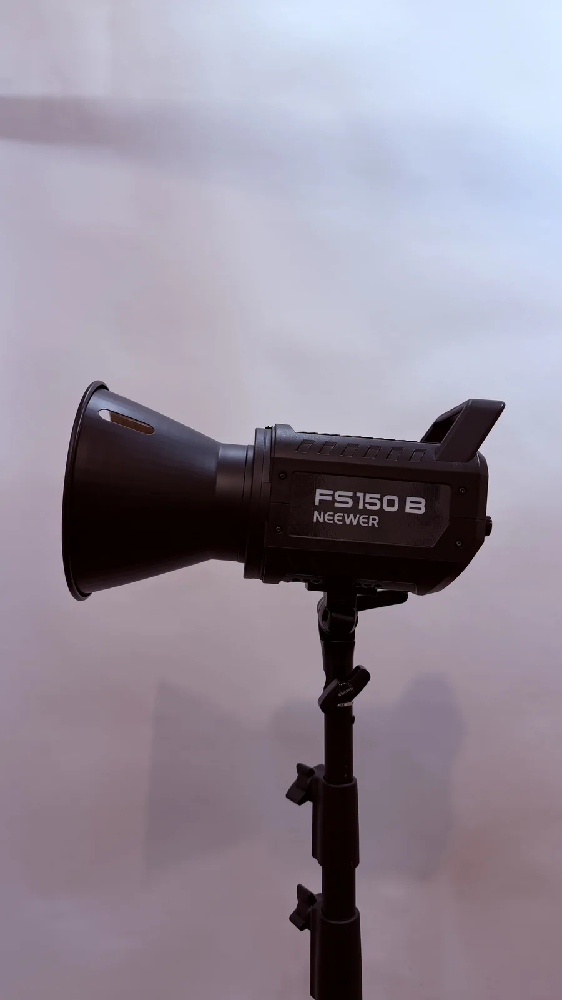
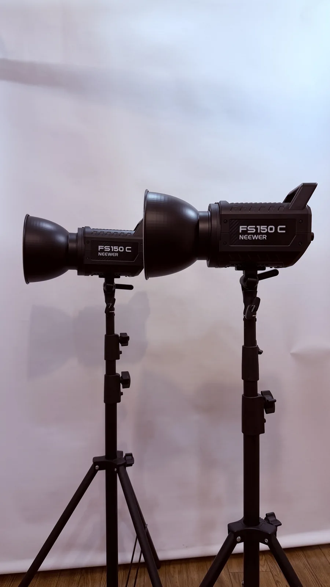
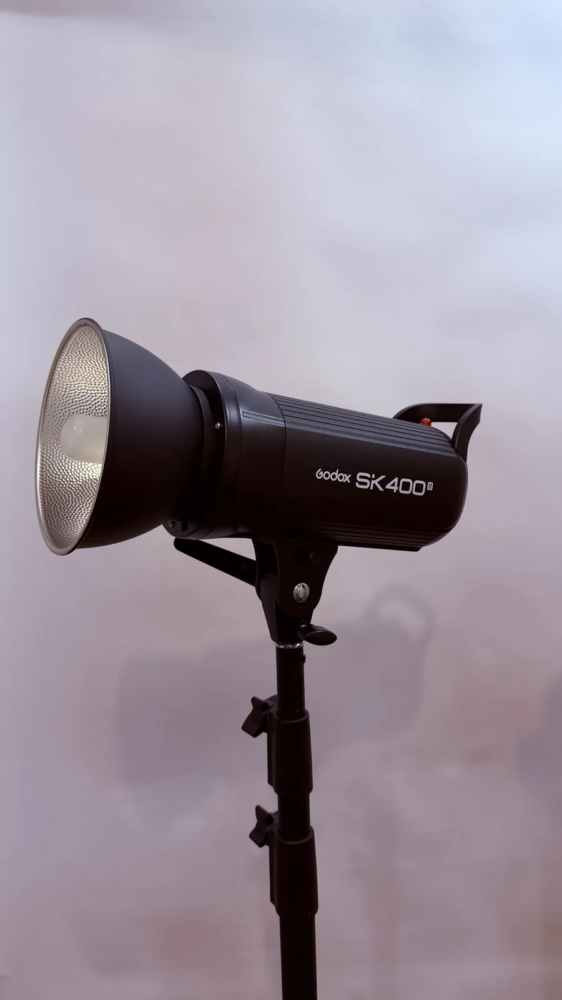
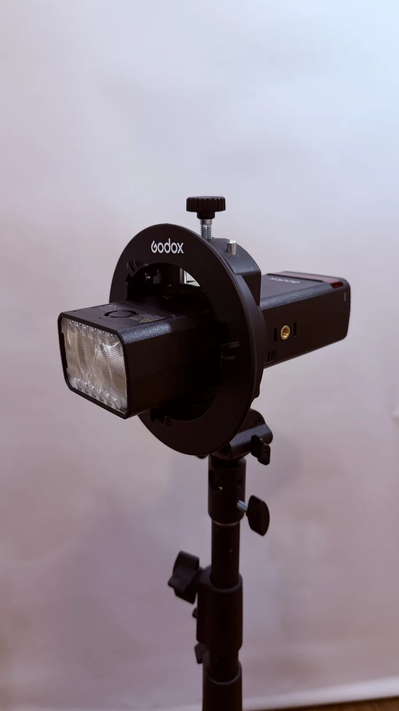
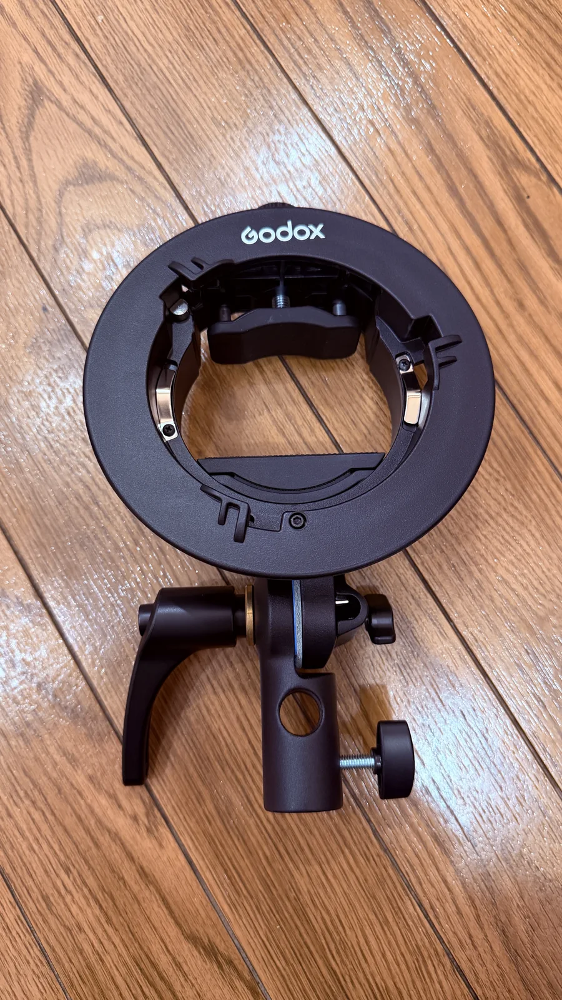
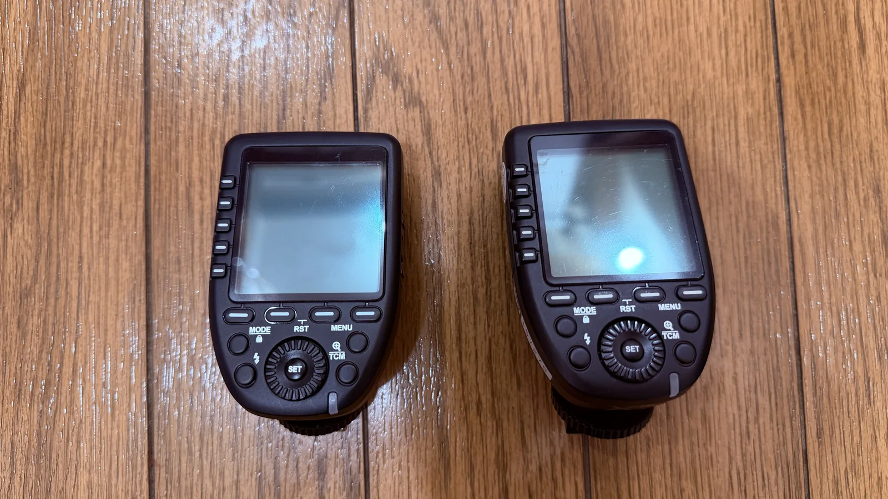

常設・無料
バイカラーパネルライト（定常光）
ライトスタンドに乗せて2灯設置した状態です。点灯した状態を見ながら光の向き・強さを調整できます。バイカラー（昼白色〜電球色）に対応しています。
Photography Equipment & Lighting
Studio Nagoya BaseとStudio Xは同じ設備・機材を共有しています。スマホ撮影から一眼・ストロボを使った撮影まで、目的に合わせて利用できます。バイカラーパネルライトや背景紙などは常設・無料で使え、COBライトやストロボなど一部の保有機材は予約時の事前相談が必要です。このページでは、実際の機材の外観と使い方をまとめて紹介します。
Equipment List
{% include equipment_table.html %}Equipment Photos

ライトスタンドに乗せて2灯設置した状態です。点灯した状態を見ながら光の向き・強さを調整できます。バイカラー（昼白色〜電球色）に対応しています。

直径約80cmのレフ板です。写真は銀面を上にして広げた状態で、被写体に光を反射させて影を和らげるのに使います。

リフレクターを装着した定常光のCOBライトです。色温度を昼白色〜電球色の間で調整できます。ご利用は予約時の事前相談が必要です。

同型のFS150Cを2灯並べた状態です。定常光でカラーライティングにも対応します。ご利用は予約時の事前相談が必要です。

リフレクターを装着したモノブロックストロボです。強い光量が必要な一眼・ストロボ撮影向けの機材です。ご利用は予約時の事前相談が必要です。

ボーエンズマウントブラケットに取り付けた状態です。ソフトボックスなどのライトモディファイヤーを装着して使用します。ご利用は予約時の事前相談が必要です。

ストロボにソフトボックスや傘などのモディファイヤーを取り付ける際に使用します。ご利用は予約時の事前相談が必要です。

カメラに装着し、対応するストロボを無線で発光させます。Canon用・SONY用をご用意しています。ご利用は予約時の事前相談が必要です。
写真は実機を撮影したものです。使用感の確認にご利用ください。
For Beginners
点灯した状態のまま明るさや向きを確認しながら調整できるので、光の扱いに慣れていない方でも設定しやすい照明です。
発光時にしか光らないため、事前のご相談が必要です。使用をご希望の場合は予約時にお申し出ください。
白・黒の背景紙（135cm×5m）を常設しています。無料でそのままご利用いただけます。
ストロボ・外部照明など、ご自身の機材の持ち込みも可能です。
当スタジオはスタッフ不在の完全貸切です。個別のセッティングサポートやレクチャーは行っておりませんので、操作にご不安がある場合は予約前にご相談ください。
Before You Use
Reservation
ご利用目的に合わせて、予約先をお選びください。